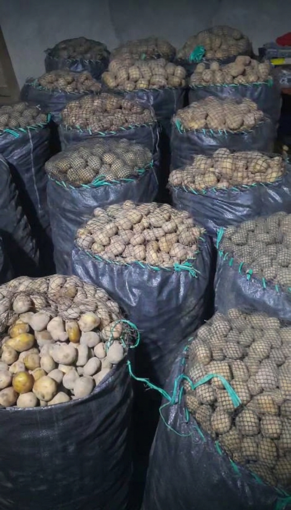
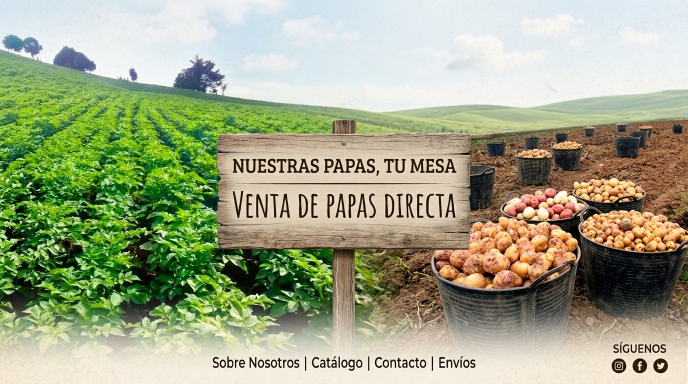

✅ Papa Yungay 🥔
Ideal para purés, guisos, sopas y frituras por su textura arenosa.

Descubre la deliciosa papa de la más alta calidad.
En La Rica Papa nos dedicamos a ofrecer papas frescas y cuidadosamente seleccionadas por calibre y calidad. Trabajamos pensando tanto en el hogar como en cocinas y negocios que buscan buen sabor, alto rendimiento y precios justos.
Producto seleccionado para conservar su textura natural y el mejor sabor en cada plato.
Opciones en 1era, 2da y 3era para que elijas el calibre ideal según tu presupuesto y receta.
Venta al por menor y pedidos por volumen con atención rápida y confiable.
Selección fresca y clasificada lista para tu hogar o negocio

Ideal para purés, guisos, sopas y frituras por su textura arenosa.